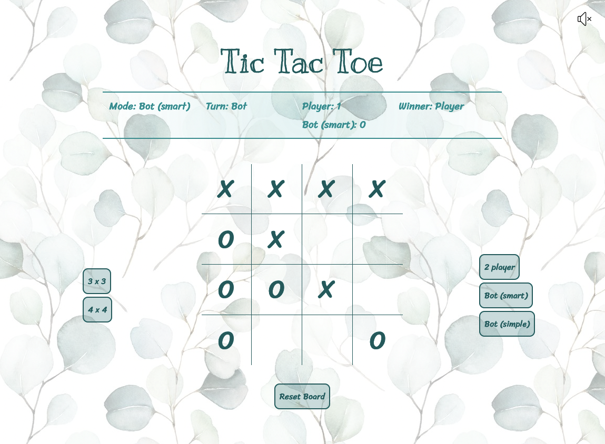
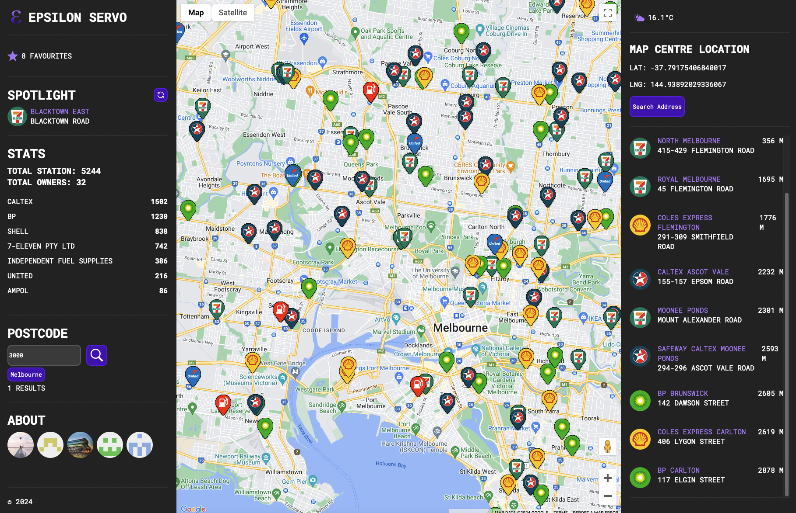

Bernadine Dao
Portfolio
Professional Summary
Software engineer experienced in designing, building and delivering production web applications and cloud-native systems. Skilled in Java, TypeScript, React and AWS, with experience across backend and frontend development, microservices, APIs and distributed systems.
Brings strong analytical problem-solving, collaboration and leadership skills from background in medicine.
Skills
- TypeScript
- JavaScript
- Python
- HTML
- CSS
- React
- Node.js
- Express.js
- Figma
- Jest
- Playwright
- Cursor / Claude
- Java
- Spring Boot
- AWS
- Azure
- REST APIs
- GraphQL
- Kubernetes
- Splunk
- OpenSearch
- AppDynamics
- CI/CD (Harness / Jenkins / Buildkite)
- PostgreSQL
- DynamoDB
- JUnit
Certifications
- AWS Solutions Architect Associate (SAA-CO3) | Feb 2025
- AWS Cloud Practitioner (CLF-CO2) | Dec 2024
- AWS AI Practitioner (AIF-C01) | Mar 2026
- FINSIA Professional Banking Fundamentals | Apr 2025
- Azure (AZ-900) Course | Sep 2025
Education
Software Engineering Course
General Assembly | Apr 2024 - Jul 2024
CS50
Harvard University | Nov 2023 - Feb 2024
Bachelor of Medical Science (Hons)
Monash University & Oxford University (UK) | Mar 2017 - Nov 2017
Bachelor of Medicine & Bachelor of Surgery (Hons)
Monash University | Mar 2014 - Nov 2019
Experience
Canva
Software Engineer | Aug 2026 – Nov 2026
- Led end-to-end delivery of Canva Video Editor features by collaborating cross-functionally and using CI/CD, staged rollouts, A/B experimentation and production monitoring to support reliable releases and data-driven product improvements.
- Built an enhanced audio discovery experience, making architectural decisions around state management, caching and search to streamline video editing workflows.
- Delivered audio replacement functionality, increasing feature adoption by 23% and improving 7-day user retention and video publishing rates.
- Resolved complex bugs and collaborated with code owners across teams to improve video editing usability, accessibility and application reliability.
- Orchestrated AI agents using Cursor and Forge to automate implementation, debugging and PR workflows, reducing manual development effort and streamlining feature delivery.
National Australia Bank (NAB)
Software Engineer | Mar 2026 – Aug 2026
- Developed React and TypeScript interfaces integrating GraphQL APIs, delivering accessible, high-performance business banking workflows.
- Built reusable UI components and frontend patterns, reducing code duplication and improving maintainability and development efficiency.
- Implemented automated testing using Jest and Playwright, improving UI reliability and reducing regression risk.
- Integrated Cursor into ticket generation, implementation, testing and PR workflows, streamlining development while maintaining human oversight of code quality.
Software Engineer (Graduate) | Feb 2025 – Mar 2026
- Diagnosed and resolved production issues across distributed Java payment microservices, improving service reliability through root-cause analysis and automated testing.
- Built production monitoring dashboards using Splunk, OpenSearch and AppDynamics to track application errors and database availability, improving observability and enabling proactive issue detection.
- Implemented data encryption using AWS Encryption SDK and IAM authentication for Amazon RDS PostgreSQL, strengthening data protection and database security.
- Consolidated multiple microservices into a unified service and API, reducing architectural complexity and simplifying ongoing maintenance.
Software Engineer (Intern) | Nov 2024 – Feb 2025
- Built a full-stack recruiting platform using React, TypeScript, GraphQL and PostgreSQL, incorporating iterative stakeholder feedback to align functionality with business requirements and improve recruiting workflows.
Multiple Hospitals
Medical Doctor | Jan 2020 – Nov 2024
- Developed analytical problem-solving, leadership and communication skills in high-pressure, multidisciplinary clinical environments.
Leadership
- Featured in NAB’s StarCamp Internship promotional video (LinkedIn) and NAB website article highlighting career transitions into technology.
- Mentor to junior software engineers through formal programs and informal guidance, supporting their professional and technical development.
Projects
Fridge to Fork
- Created a full-stack single page application for finding recipes by ingredients / cuisine / diet, integrating an external API and an internal REST API.
Technologies
Node | Express | React | React-Router | Vite | PostgreSQL | HTML | CSS | JavaScript | Material UI | Render | Figma | Miro | AWS - S3, CloudFront, RDS, Lambda, API Gateway, EC2
GitHub
https://github.com/berternie9/fridge_to_fork
YouTube Demo
https://www.youtube.com/watch?v=pNn7ii5Z-A4ScribeSpace
- A project that I built as part of the General Assembly Software Engineering course.
- Developed an online reading companion and implemented CRUD features (e.g. adding new books, notes, reviews and vocabulary).
- Ensured industry benchmark features for user authentication, sessions, and routing conventions using a REST API.
Technologies
Node | Express | PostgreSQL | HTML | CSS | Javascript | Render
GitHub
https://github.com/berternie9/scribespaceYouTube Demo
https://www.youtube.com/watch?v=bojNAP3_IgsGarden Planner
- Originally my Final Project for the CS50 course.
- Developed an online yearly garden planner, with CRUD functionality for custom plants and gardens.
- Integrated a weather API, which can display the weather at user-inputted coordinates.
- Incorporated a robust SQLite database to track plant and garden information, which I converted to PostgreSQL for deployment on Render.
Technologies
Python | Flask | PostgreSQL | HTML | CSS | Javascript | Render
GitHub
https://github.com/berternie9/garden-plannerYouTube Demo
https://www.youtube.com/watch?v=4ROhMB_EX68Tic Tac Toe
- A project that I built as part of the General Assembly Software Engineering course.
- Built a web application for playing tic tac toe; either 2-player, or against a bot.
- Incorporated 'finite state machine' and 'expert system AI' concepts into bot logic.
Technologies
HTML | CSS | Javascript | GitHub Pages
GitHub
https://github.com/berternie9/tic-tac-toe
Deployed on GitHub Pages
https://berternie9.github.io/tic-tac-toe/
Screenshot

Epsilon Servo
- Collaborated with other software developers to build a full-stack single page application (SPA) for finding petrol stations, with a model view controller (MVC) framework.
- Leveraged version control (Git & GitHub), and maintained clear and concise communication across the group to coordinate pull requests and merges.
- Implemented multiple external and internal APIs, incl. Google Maps, Open Meteo, Geocoding & Reverse Geocoding.
Technologies
Node | Express | PostgreSQL | HTML | CSS | JavaScript | AJAX | Git | JSON | Trello | Figma
GitHub
https://github.com/berternie9/epsilon_servo
Screenshot
